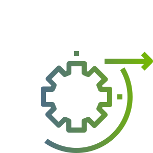

ΕΤΑΙΡΙΑ
Όραμα μας, να δημιουργήσουμε έναν από τους μεγαλύτερους Ελληνικούς ομίλους εταιριών στον χώρο της τεχνολογίας
Η techasol δραστηριοποιείται στον χώρο της τεχνολογίας. Απαρτίζεται από στελέχη και προσωπικό με πολυετή εμπειρία στον τεχνολογικό χώρο.
ΥΠΗΡΕΣΙΕΣ
Γνωρίζουμε τις ανάγκες του σύγχρονου επιχειρηματία, θέλουμε να νιώθει σίγουρος 365 μέρες τον χρόνο για τις υπηρεσίες που προσφέρουμε.
Σύντομα θα εμπλουτίσουμε το περιεχόμενο της ιστοσελίδας με τις υπηρεσίες μας.
ΠΡΟΪΟΝΤΑ
Η πολυετής εμπειρία στον χώρο της τεχνολογίας, μας βοηθά να προσφέρουμε πάντα στοχευμένα και αξιόπιστα προϊόντα στους συνεργάτες μας.
Σύντομα θα εμπλουτίσουμε το περιεχόμενο της ιστοσελίδας με τα προϊόντα μας.
ΛΥΣΕΙΣ
Η techasol προσφέρει τεχνολογικές λύσεις σύμφωνα με τις νεώτερες τεχνολογίες.
Σύντομα θα εμπλουτίσουμε το περιεχόμενο της ιστοσελίδας με τις λύσεις μας.
ΕΡΕΥΝΑ
Στην techasol δεν μένουμε στάσιμοι, φροντίζουμε πάντα να ενημερωνόμαστε και να κάνουμε έρευνα, πάνω σε νέες τεχνολογίες και πρότυπα στον χώρο δραστηριότητας μας. Η δυνατότητα να προσφέρουμε αγαθά τελευταίας και ασφαλούς τεχνολογιάς στους συνεργάτες μας, αποτελεί για εμάς τον βασικό στόχο λειτουργίας.

Σύντομα θα εμπλουτίσουμε το περιεχόμενο της ιστοσελίδας με τα πεδία έρευνας μας.
ΕΠΙΚΟΙΝΩΝΙΑ
Η επικοινωνία με τους συνεργάτες μας είναι σημαντική, θα χαρούμε να σας εξυπηρετήσουμε.
Σύντομα θα εμπλουτίσουμε το περιεχόμενο της ιστοσελίδας με τα στοιχεία επικοινωνίας μας.
- 210-xxxxxxx
- xxxxx@techasol.gr
- Αθήνα, Αττική, Ελλάδα